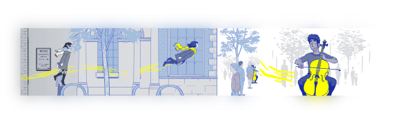

A Study of Florence by Mountains: The Impact Of Sound And Visuals In Immersive Storytelling.
I will explore the emotional themes and visual motifs of the game Florence by Mountains.
The game Florence uses many design techniques to help envelope the player into the game. Moreover, with these techniques,
the game becomes an experience rather than an activity.

Bibliography.
Beck, Michael J., and Allison John M. Jr. “Shall We Play a Game?: The Performative Interactivity of Video Games,” 2014. https://digital.library.unt.edu/ark:/67531/metadc700111/.
Geslin, Erik, Laurent Jégou, and Danny Beaudoin. “How Color Properties Can Be Used to Elicit Emotions in Video Games.” International Journal of Computer Games Technology 2016 (2016): 1–9. https://doi.org/10.1155/2016/5182768.
Palmer, Stephen E., Karen B. Schloss, Zoe Xu, and Lilia R. Prado-León. “Music–Color Associations Are Mediated by Emotion.” Proceedings of the National Academy of Sciences 110, no. 22 (2013): 8836–41. https://doi.org/10.1073/pnas.1212562110.
Shaidi, Reza, Rostam Golmohammadi, Mohammas Babamiri, Javad Faradmal, and Mohsen Aliabadi. “Effect of Warm/Cool White Lights on Visual Perception and Mood in Warm/Cool Color Environments.” EXCLI J. 20 (August 2021): 1379–93. https://doi.org/10.17179.